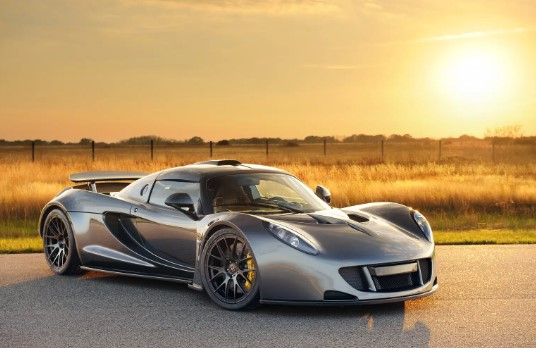
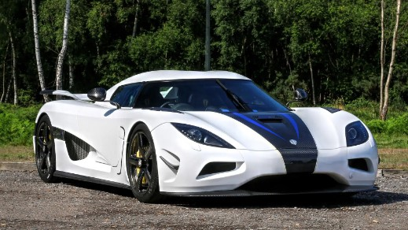
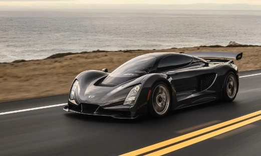
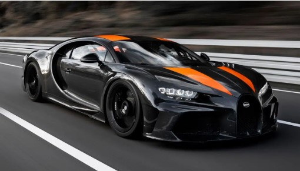

Koenigsegg Agera RS
Koenigsegg Agera RS เป็น Hupercar รุ่นที่ทรงพลังที่สุดในซีรีส์ Agera
และทำสถิติเป็นรถยนต์ที่ขายได้รวดเร็วที่สุดในโลกของเดือนพฤศจิกายน ปี
2017 โดยถูกผลิตอย่างพิถีพิถันเป็นจำนวนจำกัดที่ 25 คันในโลกเท่านั้น
ถือว่าเป็นหนึ่งในรถยนต์ที่หายากที่สุดในโลก Koenigsegg Agera RS
มีดีไซน์มันเงา หรูหรา
ตอบโจทย์ของผู้ที่ต้องการรถยนต์ที่มีสมรรถนะครบทุกด้าน
โดยมาพร้อมกับเครื่องยนต์แบบเทอร์โบคู่ความจุ 5 ลิตร V8 สูบ พลังกำลัง
1,160 แรงม้า เร่งความเร็ว 0-100 กิโลเมตร/ชั่วโมงได้ใน 2.8 วินาที
ทำความเร็วได้สูงสุด 457 กิโลเมตร/ชั่วโมง มีราคาอยู่ที่ $2.5 ล้านเหรียญ

C zinger 21c
C zinger 21c
ได้แรงบันดาลใจของการดีไซน์มาจากเครื่องบินตรวจการรุ่นโด่งดังอย่าง
Lockheed SR-71 Blackbird จากสหรัฐอเมริกา
และชิ้นส่วนรถยนต์บางชิ้นจะมีการสร้างขึ้นจาก เครื่องพิมพ์สามมิติ
โดยใช้วัสดุหลักอย่าง Titanium และ Aluminium
ภายในห้องโดยสารจะให้บรรยากาศคล้ายกับการนั่งอยู่ในคอนโซลเครื่องบิน
ตกแต่งภายในอย่างหรูหราด้วยวัสดุ Carbon-fiber
มีติดตั้งจอขนาดใหญ่เพื่อแสดงข้อมูลความเร็ว
และจอเสริมระบบสัมผัสที่ใช้ควบคุมระบบภายในรถได้

Bugatti Chiron Super
Bugatti Chiron Super Sport 300+ ผลิตขึ้นมาจำนวนจำกัดเพียง 30 คันในโลก
มาพร้อมกับเครื่องยนต์แบบเทอร์โบ 4 ลูก ความจุ 8 ลิตร W16 สูบ
พละกำลังสูงสุด 1,600 แรงม้า เร่งความเร็ว 0-100
กิโลเมตร/ชั่วโมงได้ภายใน 2.4 วินาที ทำความเร็วได้สูงสุด 483
กิโลเมตร/ชั่วโมง มีราคาอยู่ที่ $3.9 ล้านเหรียญ

Bugatti Bolide
Bugatti Bolide ถูกผลิตขึ้นเพียง 40 คันในโลก
มาพร้อมกับเครื่องยนต์แบบเทอร์โบ 4 ลูก ตัวเดียวกับซีรีส์ Chiron
แต่ถูกปรับแต่งให้ทรงพลังมากยิ่งขึ้น ความจุ 8 ลิตร W16 สูบ พละกำลัง
1,825 แรงม้า มีแรงบิดที่ 1,364 ปอนด์/ฟุต เร่งความเร็ว 0-100
กิโลเมตร/ชั่วโมงได้ภายใน 2.17 วินาที ทำความเร็วได้สูงสุด 498
กิโลเมตร/ชั่วโมง มีราคาอยู่ที่ $4.7 ล้านเหรียญ